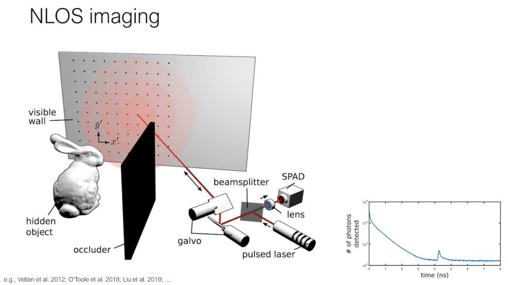
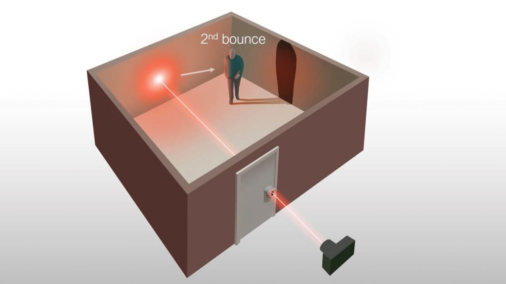
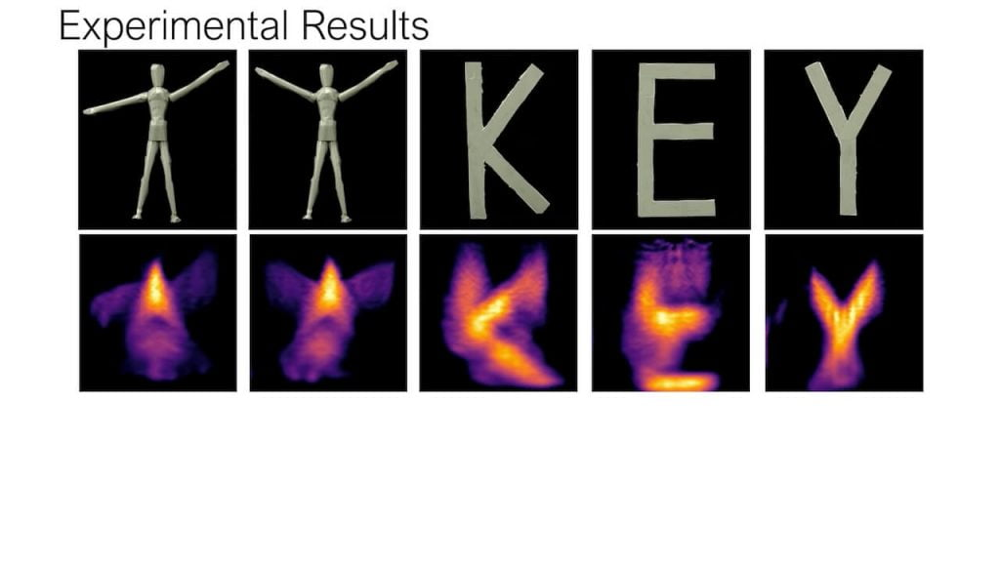

လက်ရှိမှာ သုတေသန ပြုဆဲ အဆင့်မှာပဲ ရှိသေးပေမယ့် နောင် မကြာလှတော့မယ့် အချိန်အတွင်းမှာ ဒီ လေဆာရောင်ခြည်သုံး ကင်မရာတွေကို အပျက်အစီးတွေကြား ပိတ်မိနေတဲ့ သူတွေကို ကယ်ဆယ်တဲ့ နေရာမျိုးတွေနဲ့ မောင်းသူမဲ့ မော်တော်ယာဉ်တွေမှာ တပ်ဆင် အသုံးပြုလာမယ်လို့ မျှော်လင့်ကြပါတယ်။
အခုတခါ စတင်းဖို့တ် ကွန်ပြူတာ အသုံးပြု ပုံရိပ်ဖော် ဓါတ်ခွဲခန်း (Stanford Computational Imaging Lab) ကနေပြီး အလုံပိတ် အခန်းတွင်းမှာ ရှိနေတဲ့ ပုံရိပ်တွေကို အပေါက်သေးသေး ကလေးကနေ လေဆာထိုးပြီး ပုံရိပ်ဖော်နိုင်မယ့် နည်းလမ်းကို တီထွင်လိုက် ကြပါတယ်။ ဒီနည်းပညာကို မျက်ကွယ် ပုံရိပ်ဖော် နည်းပညာ (non-line-of-sight imaging) လို့ အမည်ပေးထားပါတယ်။ သော့ပေါက် ပုံရိပ်ဖော် စနစ် (Keyhole imaging) လို့လဲ အတိုခေါ်ကြပါတယ်။
ဒီနည်းပညာက သော့ပေါက်လောက် ရှိတဲ့ အပေါက်ကလေးကနေ လေဆာတန်း ထိုးပြီး အခန်းထဲက အရာဝတ္ထုတွေကို ဓါတ်ပုံရိုက်နိုင်တဲ့ စနစ် ဖြစ်ပါတယ်။ အပေါက်သေးသေး ကလေးကနေ လေဆာတန်းလေး တတန်းထိုးပြီး အခန်းတခန်းလုံးမှာ ရှိနေတဲ့ ပစ္စည်းတွေကို ကွန်ပြူတာနဲ့ ပြန်ပုံဖေါ်တာပဲ ဖြစ်ပါတယ်။
ဒီလို မျက်ကွယ် ပုံရိပ်ဖော် နည်းပညာက လုံးဝ အသစ်အဆန်းတော့ မဟုတ်ပါဘူး။ ဒါပေမယ့် အရင်က တီထွင်ခဲ့တဲ့ မျက်ကွယ် ပုံရိပ်ဖော် ကင်မရာ တွေက နံရံ ထောင့်ချိုးလို နေရာမျိုးတွေ နောက်ဖက်က ပုံရိပ်တွေလောက်ထိပဲ ဖေါ်နိုင်ပါသေးတယ်။ အကာအရံ အတားအဆီး အနည်းအကျဉ်းရဲ့ နောက်က ပုံရိပ်တွေကိုလဲ ဖော်နိုင်ပေမယ့် အခန်း တခန်းလုံးမှာ ရှိနေတဲ့ အရာဝတ္ထုတွေကို ပုံဖော်နိုင် လောက်တဲ့ အထိတော့ မစွမ်းခဲ့ပါဘူး။
အရင်က တီထွင်ခဲ့တဲ့ နည်းလမ်းတွေမှာ ပုံဖော်တဲ့ နည်းလမ်းက အလင်းပြန်လွယ်တဲ့ အုတ်နံရံလို နံရံမျိုးတွေနဲ့ ချောမွတ်တဲ့ ကြမ်းပြင်လို နေရာတွေကို အသုံးချပြီး ပုံရိပ်ဖေါ်တာ ဖြစ်ပါတယ်။ ဒီ နံရံ (သို့) ကြမ်းပြင်ဟာ ကင်မရာရော ဓါတ်ပုံရိုက်မယ့် အရာ ဝတ္ထုရောရဲ့ မြင်ကွင်းမှာ ရှိနေဖို့ လိုအပ်ပါတယ်။
ဒီ အကာအရံရဲ့ နောက်က ပုံရိပ်ကို ဖော်ဖို့ အတွက်ဆို ပထမဆုံး ကင်မရာကနေ အလင်းရောင် တဖြတ်ဖြတ် ထိုးပေးဖို့ လိုအပ်ပါတယ်။ ဒီ အလင်းရောင်ဟာ နံရံမှာ အလင်းပြန်ပြီး ဓါတ်ပုံ အရိုက်ခံမယ့် အရာ ဝတ္ထုဆီ ရောက်သွားပါမယ်။ ဒီရောက်သွားတဲ့ အလင်းရောင်ဟာ ဒီ အရာဝတ္ထုကနေ အလင်းပြန်လားပြီး ခုနက နံရံ (သို့) အနီးအနားက နံရံ နဲ့ ကြမ်းပြင် တွေကနေ တဆင့် ကင်မရာဆီ ပြန်ရောက်လာပါတယ်။

ရလာတဲ့ ပုံရိပ်တွေက သိပ်တော့ ကြည်လင် ပြတ်သားမှု မရှိလှပါဘူး။ ဒါပေမယ့် ဖုံးကွယ်နေတဲ့ အရာဝတ္ထုဟာ ဘယ်လို အရာဝတ္ထုလဲ ဆိုတာကို အမျိုးအစား ခွဲခြားနိုင်ဖို့ အတွက်တော့ လုံလောက်ပါတယ်။
ဒီနည်းလမ်းဟာ ပြောရရင်တော့ အတော်ကလေးကို ထူးခြားတဲ့ တီထွင်ဖန်တီးမှု တခုဖြစ်ပါတယ်။ ဒါပေမယ့် သူ့မှာ ကြီးမားတဲ့ ကန့်သတ်ချက်ကြီး ရှိနေပါတယ်။ အဲ့တာကတော့ အလင်းပြန်ဖို့ ကြီးမားတဲ့ မျက်နှာပြင် လိုအပ်တာပဲ ဖြစ်ပါတယ်။ အလင်းပြန်မယ့် နံရံ ကျယ်ကျယ် (သို့) အလင်းပြန်မယ့် ကြမ်းပြင်မျိုး ရှိဖို့ လိုအပ်ပါတယ်။
ဒီနည်းလမ်းကို အသုံးပြုပြီး အလုံပိတ် အခန်းထဲမှာ ရှိနေတဲ့ လူ (သို့) အရာဝတ္ထုတွေကို ထောက်လှမ်းဖို့ကလဲ မဖြစ်နိုင်သေးပါဘူး။ ဒါပေမယ့် အလုံပိတ် အခန်းထဲကို ထောက်လှမ်းနိုင်မယ့် စနစ်ကို စတင်းဖို့ ဓါတ်ခွဲခန်းက တီထွင်လိုက် နိုင်ပါတယ်။
ဒီနည်းလမ်းကို သော့ပေါက် ပုံရိပ်ဖော်စနစ်လို့ ဘာလို့ ခေါ်ရတာလဲ ဆိုတော့ ဒီနည်းလမ်းနဲ့ အခန်းတွင်းကို ပုံရိပ်ဖေါ်ဖို့ဆို အပေါက် သေးသေးလေ တပေါက်ပဲ လိုအပ်လို့ ဖြစ်ပါတယ်။ ဒီအပေါက်လေးကနေ လေဆာတန်း သေးသေးလေး နဲ့ အခန်းထဲကို ထိုးလိုက်တာပါ။ ဒီထိုးလိုက်တဲ့ လေဆာဟာ တဖက်က အခန်းနံရံပေါ် ကျရောက်သွားပါတယ်။ လေဆာတန်းက သေးသေးလေး ဆိုတော့ တဖက်နံရံမှာ ပေါ်မယ့် အလင်းရောင်ကလဲအစက်ကလေး အရွယ်ပဲ ရှိတာပါ။

ဒီနည်းက အခန်းထဲက အရာ ဝတ္ထု အားလုံးကိုတော့ ပုံရိပ်မဖော် နိုင်သေးပါဘူး။ ဖုံးကွယ်နေတဲ့ အရာဝတ္ထုသည် လှုပ်ရှားမှုမရှိပဲ ငြိမ်နေမယ် ဆိုရင် ပုံရိပ်ဖော်ကွန်ပြူတာက ပုံဖေါ်ပေးနိုင်စွမ်း မရှိပါဘူး။ ဒါပေမယ့် အဲ့သည် အရာဝတ္ထုဟာ လှုပ်ရှားနေမယ် ဆိုရင်တော့ လုံလောက်တဲ့ အလင်းပြန်မှုကို ဖြစ်ပေါ်စေပြီး ပုံရိပ်ဖော် ကွန်ပြူတာက တွက်ချက်ပုံဖော် ပေးနိုင်မှာ ဖြစ်ပါတယ်။
နောက်ပြီး ရလာတဲ့ ပုံရိပ်ရဲ့ အရည်အသွေး ကွာလတီက အတော်လေးကို ညံ့ဖျင်းပါတယ်တဲ့။ ဒါပေမယ့် အစွမ်းထက်တဲ့ AI (Artificial Intelliegence) နည်းပညာနဲ့ အသုံးပြု နိုင်မယ် ဆိုရင် ရလာတဲ့ ပုံရိပ်ဟာ ဘာပုံ ဖြစ်မလဲ ဆိုတာကို ခန့်မှန်းနိုင်မှာ ဖြစ်ပါတယ်။

ဒီနည်းစနစ်ကို နောင်တချိန်မှာ ရဲတပ်ဖွဲ့တွေက အခန်းတွင်း စီးနင်ဝင်ရောက်ခြင်း မပြုမီ အန္တရာယ် ကင်းရှင်းမှု ရှိမရှိ ဆိုတာကို သိနိုင်အောင် ထောက်လှမ်းတဲ့ နေရာမျိုးမှာ သုံးလာ နိုင်ပါတယ်။ နောက်ပြီး မောင်းသူမဲ့ ယာဉ်တွေနဲ့ ဒရုန်တွေမှာလဲ အတားအဆီးတွေကို ကြိုတင် မြင်နိုင်ဖို့ အသုံးပြုလာ နိုင်ပါတယ်။
Reference: A Single Laser Fired Through a Keyhole Can Expose Everything Inside a Room